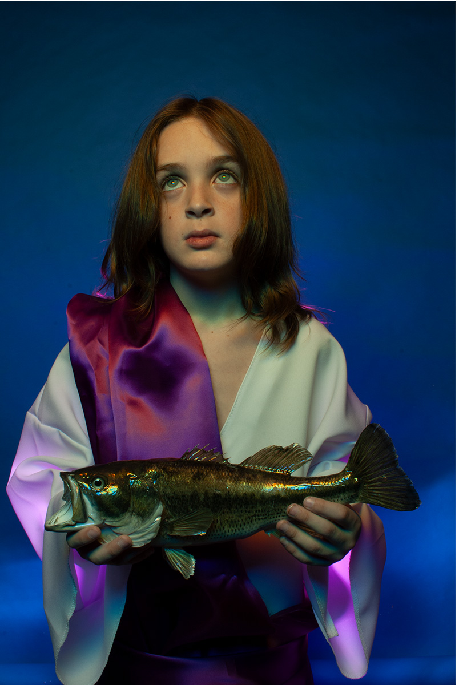
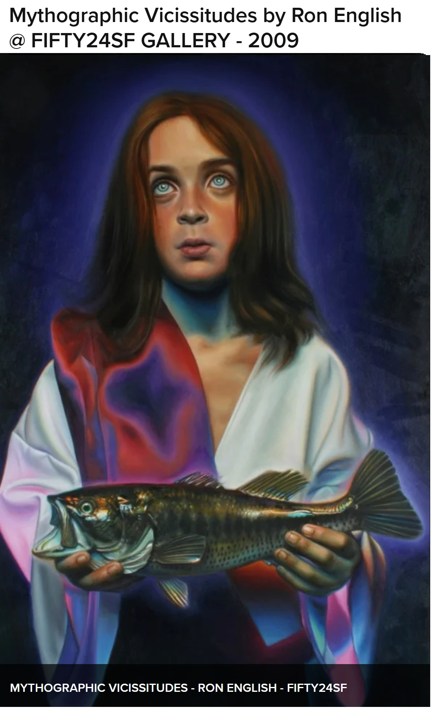
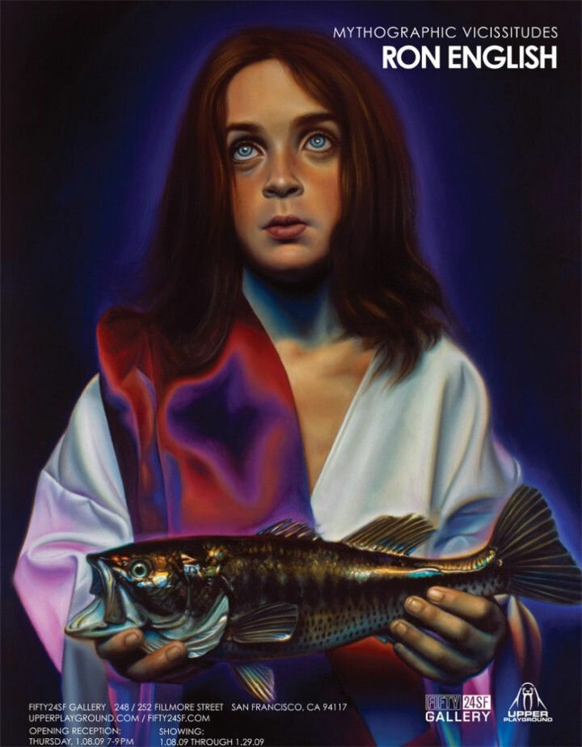
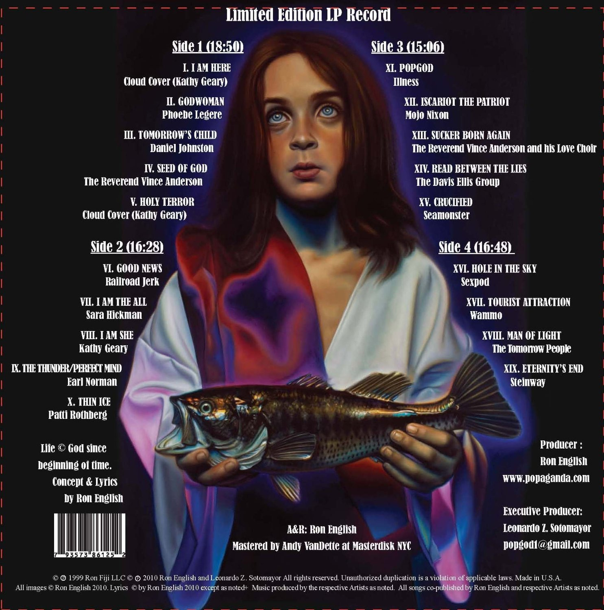
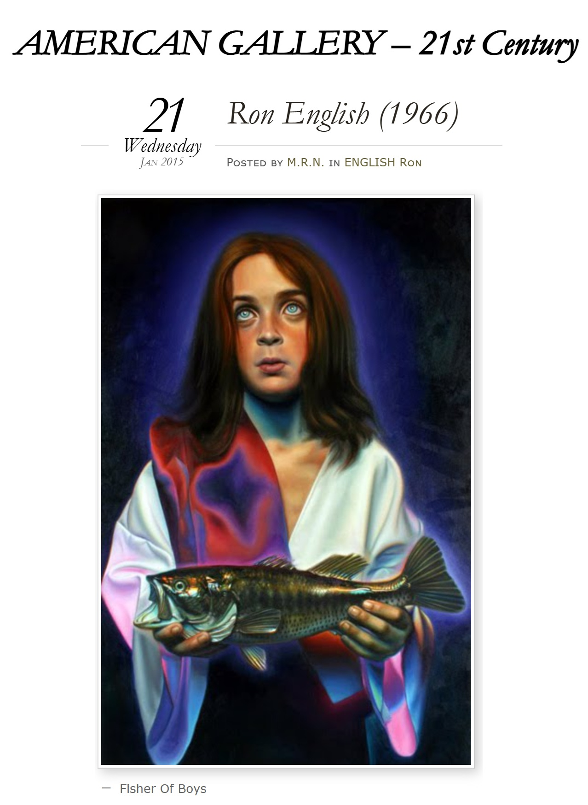

Exhibitions
Mythographic Vicissitudes, FIFTY24SF Gallery, San Francisco, California, US, January 8–29, 2009.
Literature
Ron English, Fauxlosophy: The Art of Ron English (San Francisco: Last Gasp, 2016), p. 16. ISBN 978-0867196566.

Ron English, Death and the Eternal Forever (London: Korero Press, 2014), p. 4. ISBN 978-0957664920.

Ron English, Status Factory: The Art of Ron English (San Francisco: Last Gasp of San Francisco, 2014), p. 36. ISBN 978-0867197891.

Ron English, Original Grin: The Art of Ron English (Paris: Cernunnos, 2019), p. 119. ISBN 978-2374950938.

Laetitia Barbier, Jesus Now: Art + Pop Culture (Paris: Cernunnos, 2021). ISBN 978-2374950068.
Megan Wolfe, “Ron English & Alex Pardee”, Fecal Face Dot Com, no. January, 2009.

FIFTY24SF Mythographic Vicissitudes archive page. Archival screenshot documenting Fisher of Boys in the context of the exhibition; source page accessed April 12, 2026.

“Saturday June 6th, Happy Birthday To Popaganda Artist Ron English, That's Today!”, Sampsel Preston Photography, 2008, p. 6.

Блинцов, “Ron English поп-арт, клоунада и стёб”, Art Assorty, January 23, 2013.

Notes
This work appears on FIFTY24SF’s archive page for Mythographic Vicissitudes.
A live model photographed by Ron English is retained as supporting documentation for the painting.
The work was used in an advertisement for Mythographic Vicissitudes.
The image also appears on the back side of the album cover for Revelations Book II.
Ancillary Documentation







Additional Online Circulation
Provenance
Artist's personal collection.